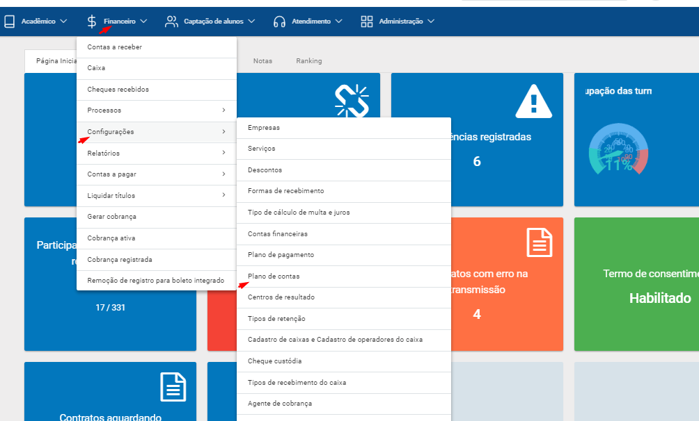
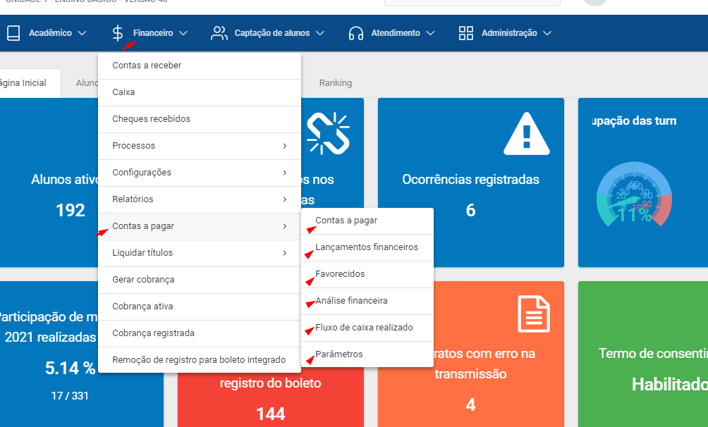
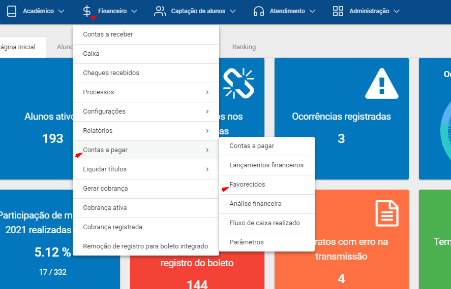

Um dos grandes desafios das escolas hoje é a otimização de tempo, recursos e redução de custos, e um fator que contribui para o alcance desses objetivos é a organização eficiente do sistema financeiro. Para ajudá-los a resolver situações de controle financeiro, será apresentado a seguir o módulo contas a pagar, suas vantagens e funcionalidades.O contas a pagar gerencia as finanças de sua empresa e facilita a obtenção de resultados financeiros de forma precisa, para auxiliar suas decisões de investimento.
quando Você entra no sistema, você ja tem um alerta de algumas atividades, principalmente o contas a pagar. Que é o foco desse treinamento.Na tela financeiro- Configuraçoes=> Planos de contas. Iremos verificar esta tela antes de adentrar no módulo.


Contas a Pagar é onde eu efetuo o cadastro de minhas contas a pagar, onde eu lanço as contas parceladas, contas recorrentes e onde eu insiro uma retenção de uma determinada conta.
Lançamentos Financeiros É praticamente a tela do caixa da tesouraria, é onde será controlado os lançamentos de entrada e sáida gerencialmente nas contas.
é onde eu efetuo o cadastro de minhas contas a pagar, onde eu lanço as contas parceladas, contas recorrentes e onde eu insiro uma retenção de uma determinada conta. Nessa tela de lançamentos não existe integração bancaria.
favorecidos É onde eu cadstro meus fornecedores e meus prestadoresde serviços que fornecem seus serviços para a escola.
Análise financeira Como andam os lançamentos financeiros em determinados grupos de contas
Fluxo de caixa realizado Demonstrativo anual que a empresa faz.
Até aqui foi explicado o processo inicial para que possamos entender o módulo. A tela que iremos iniciar o treinamento é pelo cadastro de favorecidos,mas por que começar por estatela e não as outras? Para eu cadastrar uma conta a pagar, analisar um relatorio ou fazer um lançamento financeiro, eu preciso ter um fornecedor cadastrado para que ele gere uma despesa na minha empresa.
A TELA QUE IREMOS INICIAR O TREINAMENTO É PELO CADASTRO DE FAVORECIDOS, MAS POR QUE COMEÇAR POR ESTA TELA E NÃO NAS OUTRAS?
PARA EU CADASTRAR UMA CONTA A PAGAR, ANALISAR UM RELATÓRIO OU FAZER UM LANÇAMENTO FINANCEIRO, EU PRECISO TER UM FORNECEDOR CADASTRADO PARA QUE ELE GERE UMA DESPESA NA MINHA EMPRESA. PASSO 1. CADASTRAR FAVORECIDO
